🏛️ Heritage & Culture
Heritage & Cultural Tourism: A journey through India’s 5,000-year history. This sector focuses on UNESCO World Heritage sites, ancient forts, and the preservation of traditional arts and architecture.
The Golden Triangle: Discover the perfect introduction to India. This circuit connects the political history of Delhi, the romance of the Taj Mahal in Agra, and the royal "Pink City" of Jaipur.
The Ruins of Hampi: Step back in time to the 14th-century Vijayanagara Empire. Wander through a surreal landscape of giant boulders and intricately carved stone temples.
Caves of Ajanta & Ellora: Explore the pinnacle of rock-cut architecture. These caves hold ancient Buddhist, Hindu, and Jain monasteries carved directly into solid basalt cliffs.
The Royal Palaces of Udaipur: Experience the "City of Lakes." This page highlights the elegant marble palaces that rise out of Lake Pichola, reflecting the opulence of Mewar royalty.
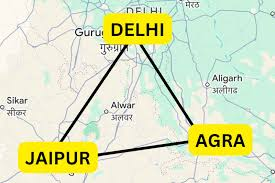
Golden Triangle

Ruins of Hampi
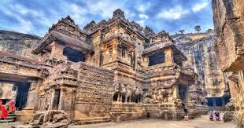
Caves of Ajanta & Ellora

Royal Palaces of Udaipur
🧘 Spiritual & Wellness
Spiritual & Wellness Tourism: Focused on the "Inner Journey." India is the global hub for Yoga, Ayurveda, and deep-rooted religious traditions that offer peace and healing to the modern traveler.
Varanasi: The Spiritual Capital: Visit one of the world's oldest living cities. Experience the profound energy of life and death along the sacred Ganges River.
Yoga & Meditation in Rishikesh: Seek balance where the mountains meet the river. Rishikesh offers a serene environment for students and masters to practice Yoga in its birthplace.
The Golden Temple of Amritsar: Enter a place of absolute peace and equality. The Harmandir Sahib is famous for its shimmering gold exterior and its tradition of feeding thousands daily for free.
Ayurveda Retreats of Kerala: Learn the "Science of Life." This page explores traditional herbal treatments and massage therapies designed to detoxify the body and mind.
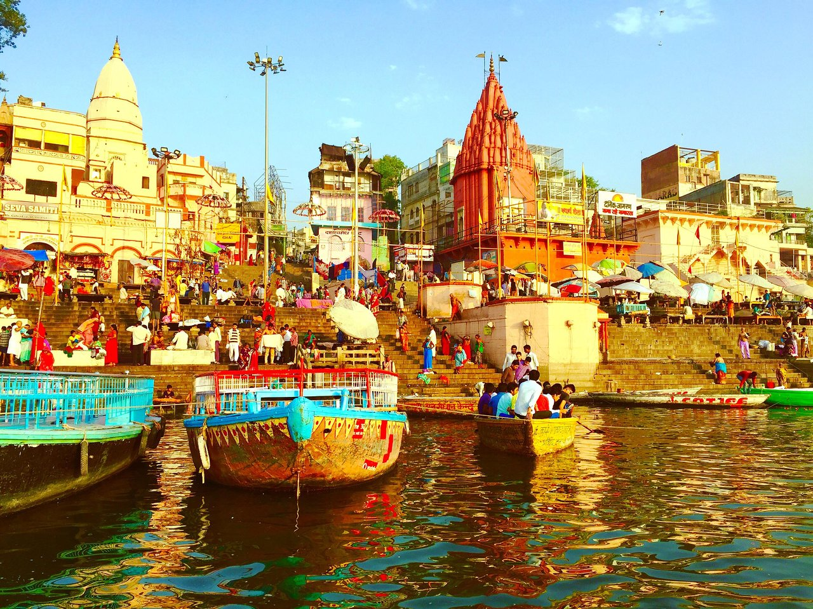
Varanasi
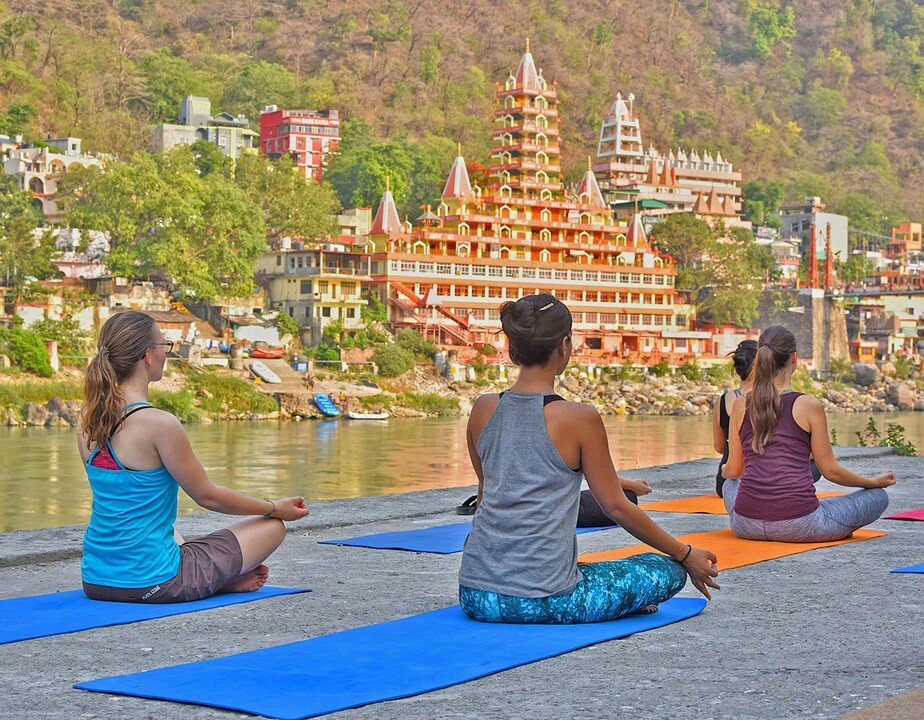
Rishikesh
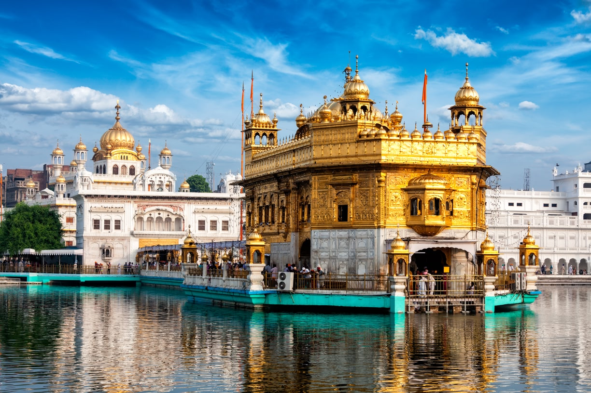
Golden Temple of Amritsar
Ayurveda Retreats of Kerala
🐅 Wildlife & Eco-Tourism
Wildlife & Eco-Tourism: Exploring India’s diverse ecosystems. From high-altitude snow leopards to tropical tigers, this category highlights conservation and the beauty of the natural world.
Tiger Safaris in Ranthambore: Track the king of the jungle. This former royal hunting ground is now a premier sanctuary for the Royal Bengal Tiger.
One-Horned Rhinos of Kaziranga: Journey to the floodplains of Assam to see the prehistoric Great One-Horned Rhinoceros in its lush, marshy habitat.
The Gir Forest: Encounter the rare Asiatic Lion. Gir is the only place on Earth where these majestic cats roam free in the dry deciduous forests of Gujarat.
Living Root Bridges of Meghalaya: See a marvel of bio-engineering. In the wettest place on Earth, the Khasi people grow bridges from the roots of living trees.
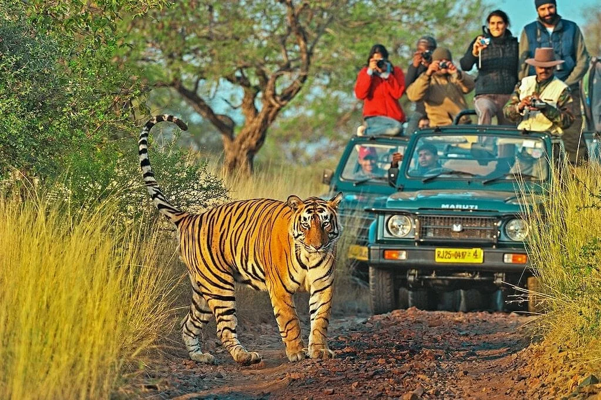
Ranthambore National Park
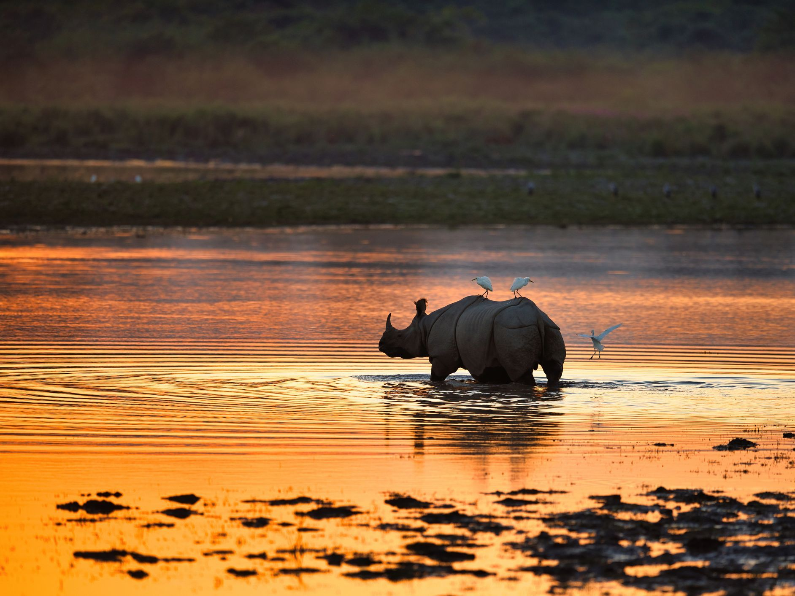
Kaziranga National Park
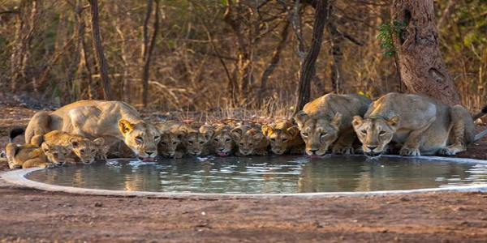
Gir Forest
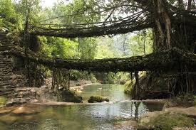
Living Root Bridges of Meghalaya
🏔️ Adventure & Nature
Adventure & Nature Tourism: For the thrill-seeker and the landscape lover. This covers the geography of India—from the highest peaks of the Himalayas to the tranquil backwaters of the South.
Ladakh: The Land of High Passes: Traverse the "Roof of the World." Ladakh offers stark desert mountains, turquoise lakes, and a deep connection to Tibetan Buddhist culture.
Spiti Valley: Astro-Tourism: Escape to the "Middle Land." This high-altitude valley is perfect for those seeking remote villages and the clearest night skies in Asia.
Backwaters of Alleppey: Drift through a labyrinth of canals. Stay on a traditional Kettuvallam (houseboat) and witness the slow, beautiful pace of rural Kerala life.
Skiing & Snow in Gulmarg: Experience the "Meadow of Flowers" in winter. Gulmarg boasts one of the world’s highest cable cars and some of the finest powder snow for skiing.

Ladakh
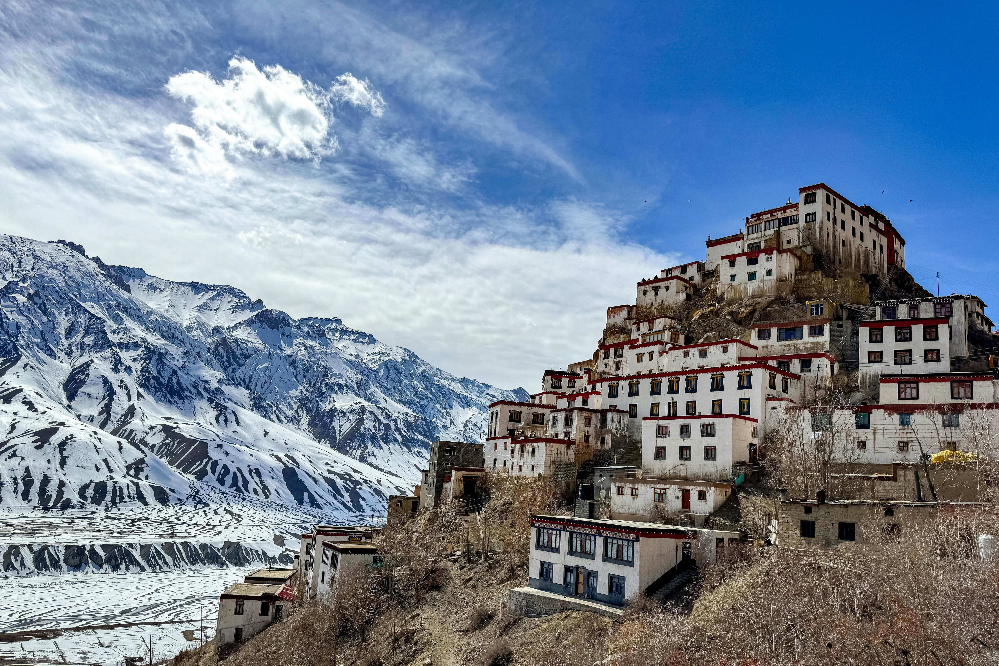
Spiti Valley

Backwaters of Alleppey
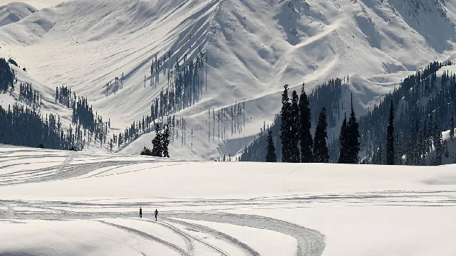
Gulmarg
🌊 Niche & Coastal
Niche & Coastal Tourism: Special interest travel that includes India's 7,500km coastline, world-class culinary experiences, and the growing sector of global medical care.
The Beaches of South Goa: Find tranquility on the coast. Unlike the busy north, South Goa offers pristine white sands, quiet coves, and a glimpse into Indo-Portuguese history.
Scuba Diving in the Andamans: Dive into the deep blue. Havelock Island is home to vibrant coral reefs, shipwrecks, and an abundance of exotic marine life.
Culinary Trails: Taste the diversity of India. From the spicy street food of Old Delhi to the aromatic seafood of the Malabar Coast, this is a journey for the senses.
Medical & Ayush Tourism: Explore why India is a top global destination for healthcare, combining world-class modern surgery with ancient holistic recovery practices.
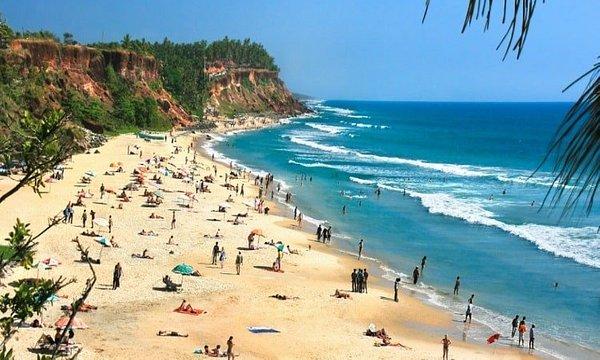
Beaches of South Goa
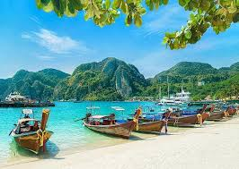
Scuba Diving in the Andamans
Culinary Trails: Old Delhi to Mumbai
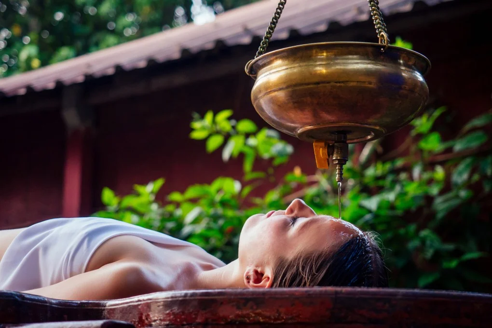
Medical & Ayush Tourism